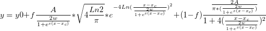

Letztes Update: 29.07.2018
Der Hauptgrund für die Langsamkeit ist die Option Peak Schwerpunkt Zentrum unter Ergebnis: Report konfigurieren: Peakeigenschaften der Seite Peaks anpassen im Dialog Peaks analysieren. Diese Option ist standardmäßig aktiviert. Origins Standardfunktionen zur Peakanpassung bieten analytische Lösungen und berechnen daher das Peak Schwerpunkt Zentrum. Benutzerdefinierte Anpassungsfunktionen haben jedoch keine analytische Lösung und berechnen deshalb das Peak Schwerpunkt Zentrum auf numerische Weise, wodurch der Anpassungsprozess langsam wird.
Ein weiterer Grund ist die Fläche Peak nach Fit unter Ergebnis: Report konfigurieren: Peakeigenschaften auf der Seite Peaks anpassen. Origin verwendet das Nullmoment zum Berechnen der analytischen Fläche, ein Vorgang, der ebenfalls zeitaufwändig ist.
Um den Anpassungsprozess zu beschleunigen, können Sie die Kontrollkästchen Peak Schwerpunkt Zentrum und Fläche Peak nach Fit im Dialog Peaks analysieren deaktivieren. Er wird dann sehr viel schneller. Wenn Sie die analytische Lösung für Peak Schwerpunkt Zentrum und Fläche Peak nach Fit kennen, können Sie manuell einen Abschnitt zu der FDF-Datei hinzufügen. Nehmen Sie zum Beispiel die folgende Anpasungsfunktion, 
Peak Schwerpunkt Zentrum und Angepasste Peak Area sind x_c bzw. A. Sie können den folgenden Abschnitt am Ende der FDF-Datei anhängen:
[Moments] mz0 = A mz1 = xc mc2 = N.A. mc3 = N.A. mc4 = N.A.
| Hinweise: Beachten Sie, dass die Auswahl der Peakeigenschaften Peak verzerren, Überschuss Peak, Moment 3. Ordnung, Moment 4. Ordnung auch zeitaufwändig sein kann. Bitte seien Sie aufmerksam, wenn Sie eine benutzerdefinierte Funktion verwenden. |
Schlüsselwörter:benutzerdefinierte Anpassungsfunktion, langsam, Peaks analysieren, beschleunigen